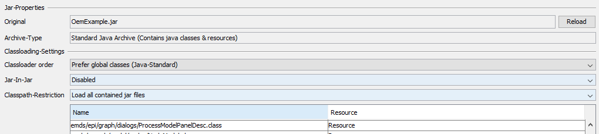

Standard Java Archive

Topic content
Description
oA standard archive is an java archive that is available within all scenario elements that use java
oDue to this fact, a standard archive can be used to extend an orchestra with user defined functions as known from standard java development
oThe archive is only visible within the same scenario, but within all elements that are using java (e.g. property assignments, java channel, scripts )
oIn order to implement this behavior orchestra has a scenario class loader that is responsible for loading classes and separating it between different scenarios
Technical description of the class loading
Classloading
oWhen a class is loaded, the java virtual machine sends the loadClass command to the scenario class loader
oThe scenario class loader in a first step looks at all standard archives with the setting "prefer local classes first". Archives with this setting a preferred when a class is loaded.
oWhen the required class is not found, the class loading is delegated to the parent class loader. This means, we search all common classes that are available for the whole application. This are typically all classes available in the java run time environment and all classes found in the WEB-INF\classes and WEB-INF\lib of the orchestra application.
oWhen no class is found in the parent class loader, al archives with setting "global first" are searched
Detail setting for for standard archives
The following screen demonstrates the standard dialog for adjusting a external java archive

•Original: Name of the original jar file.
•Reload: Allows to overwrite the content of the archive with a newer version loaded from the file system
•Archive type: Defines the type of the given archive
•Class loading settings: General settings that define the order how class are loaded
•Class loader order:
oPrefer global classes: When the same class is generally available and also available in the archive, the generally classes are preferred
oPrefer local classes: All classes in the local archive are preferred during load. With means even if the same class exists twice, always the local class is loaded
•Jar-In-Jar: Defines how jar files contained in the archive should be treated
oEnable: All jar-files that are contained in the archive are extracted on the fly and all classes contained within this files could be accessed as normal classes
oDisabled: Jar files are treated as resources. The are not extracted on the fly
•Class path restriction:
oLoad all contained jar files: All jar files are available and can be accessed
oLoad internal jar files referenced by META-INF class path: Only jar files are loaded when the are referenced in the file "META-IN/classpath" contained in the function archive